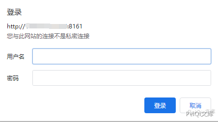
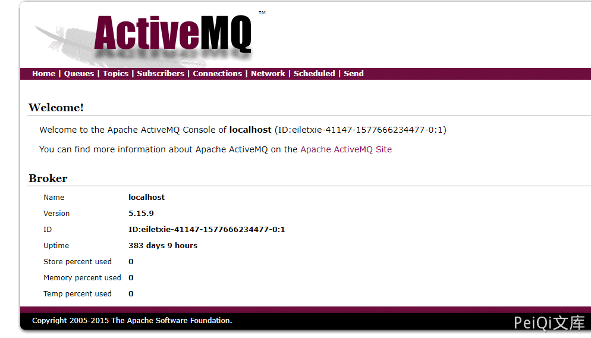
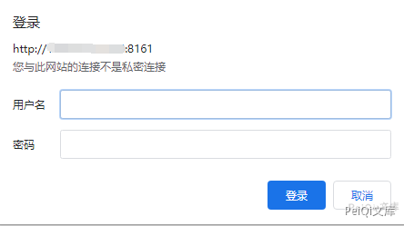
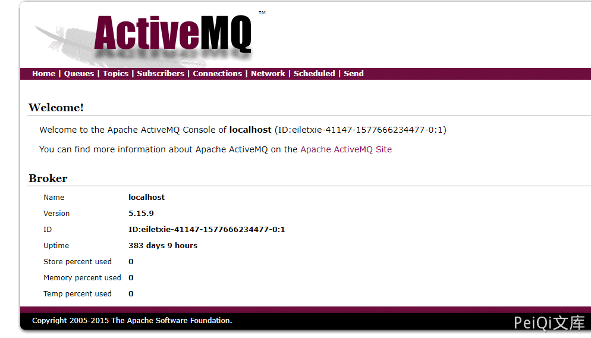

Apache ActiveMQ Console 控制台默认弱口令¶
漏洞描述¶
Apache ActiveMQ Console 存在默认弱口令 admin:admin，进入控制台后可被进一步恶意利用
漏洞影响¶
Apache ActiveMQ
漏洞复现¶
Apache ActiveMQ 默认开启了 8186 控制台
访问目标: http://xxx.xxx.xxx.xxx:8161/admin

使用默认口令 admin:admin

Apache ActiveMQ Console 存在默认弱口令 admin:admin，进入控制台后可被进一步恶意利用
Apache ActiveMQ
Apache ActiveMQ 默认开启了 8186 控制台
访问目标: http://xxx.xxx.xxx.xxx:8161/admin

使用默认口令 admin:admin
